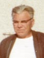

ALINE HENRIfiche familiale
*******************************************************************************
|
Aline Henridécède à l'âge de 79 ans. Naissance le 8 février 1920 à Macamic. Parrain Francis Turcotte, marraine Léocadie Patoine son épouse, voisins et amis de la famille. Décès le 25 avril 1999 à Moose-Jaw, SK. Sépulture au Resthaven Memorial Garden de Moose-Jaw. Marraine de Francine Beaudoin. Père: Eugène HenriMère: Graziella Provost(sa famille) |
Mariage le 22 août 1942 à St-Sauveur de Val D'Or.
|  |
Époux: Jacques Lussierdécède à l'âge de 65 ans. Naissance le 18 mai 1915 à Ste-Rose-du-Lac, MB. Dit : "Jack"Décès le 30 mai 1980 à Moose-Jaw, SK. Parrain de Francine Beaudoin. Père: Raymond LussierMère: Léa Régnier(sa famille) |
*******************************************************************************
Enfant 1 Bernice LussierNaissance: 22 nov 1942 à Val-D'Or
Mariage le 5 juin 1965.
| |
Conjoint: Jerry Hobbes
décède à l'âge de 56 ans.
Naissance: en 1941, décès: 16 août 1997 à Glaslyn, SK
Père: Glenn Hobbes
Mère: Yvonne |
Enfant 1 Marie-Lynn HobbesConjoint: Robb HindJessie HindAlyx HindEnfant 2 Tammy-L. HobbesConjointe: Darryl MarkewichScotty HobbesJenny HobbesEnfant 3 Michael HobbesConjointe: Sylvia ?Leslie HobbesAmbre HobbesTeddy HobbesEnfant 4 Penny HobbesConjoint: Wade Holiday
-------------------------------------------------------------------------------
| |
Enfant 2 Diane Lussier
décède à l'âge de 71 ans.
Naissance: 24 nov 1943 à Rouyn-Noranda
décès: 16 décembre 2014 à Don Mils, ON |
Mariage le 7 octobre 1967 à Toronto
Conjoint: Denis MacLellanNaissance: 10 jan 1943
Père: John MacLellanMère: Lucye ?Enfant 1 Daniel-Lee-J.J. MacLellan
-------------------------------------------------------------------------------
Enfant 3 André LussierNaissance: 31 déc 1944 à Woodstock, ON
Mariage le 19 août 1974 à Orillia, ON.
Conjointe: Judy Emmsdécède à l'âge de 59 ans.
Naissance: 28 jan 1952
décès: 25 mai 2011 à Orillia, ON
Enfant 1 Andara LussierEnfant 2 Marc Lussier
-------------------------------------------------------------------------------
Enfant 4 Michel LussierNaissance: 12 déc 1946 à Rouyn-Noranda
Enfant 1 Cindy Lussier
-------------------------------------------------------------------------------
Enfant 5 Guy LussierNaissance: 22 déc 1947 à Val-D'Or
-------------------------------------------------------------------------------
Enfant 6 Suzanne Lussierdécède à l'âge de 61 ans.
Naissance: 17 jul 1949 à Val-D'Or
Décès le 2 mars 2011 à Orillia , ON
Conjoint: Laurie FarisEnfant 1 Robert FarisEnfant 2 Adriane Faris
-------------------------------------------------------------------------------